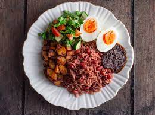

Waakye

Description
Waakye is a Ghanaian meal made with rice, beans and sorghum leaves.
Waakye or awaakye (as preferred by some locals) is commonly served with salad, spaghetti and any protein of your choice with a touch of hot sauce and stew.
Ingredients
- Sorghum Leaves
- Rice
- Beans
- Salt
Steps
- Wash and soak the beans for at least 30 minutes.
- Boil the beans together with the sorghum leaves for about 20 minutes or until the beans is partially cooked.
- Remove the sorghum leaves from stalk
- Pour your rice in the stalk and cook it for 20-30 minutes.
- Waakye is serverd stew or spicy pepper sauce with proteins like fish, meat and other vegetables.